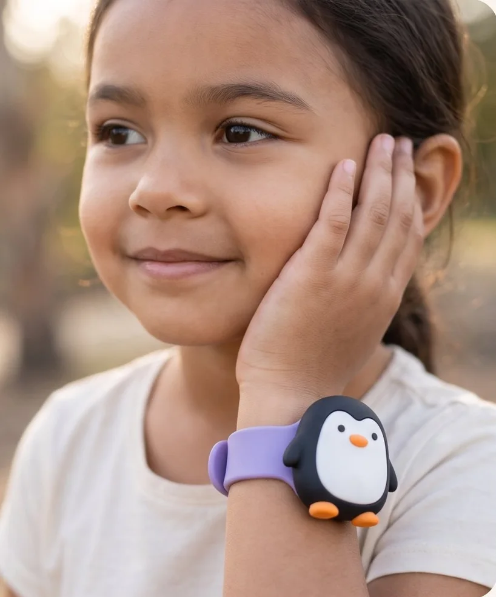
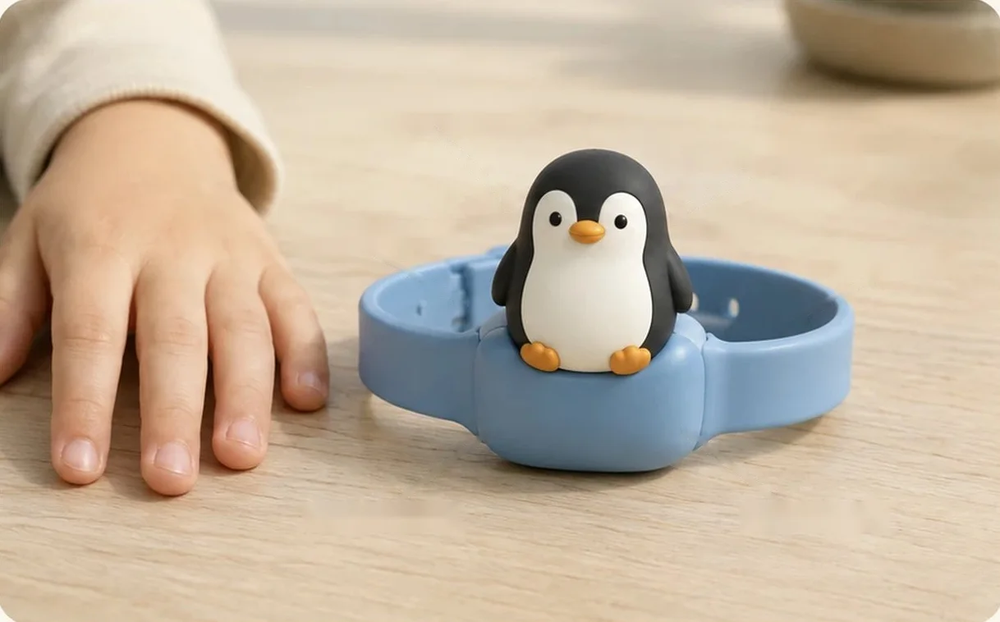
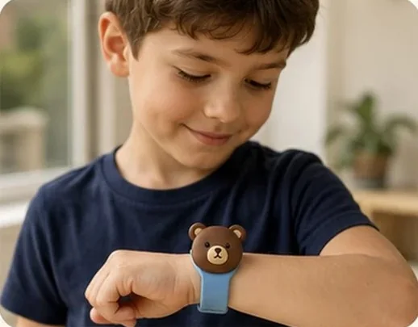
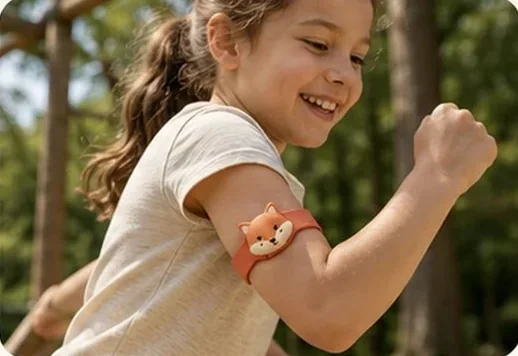
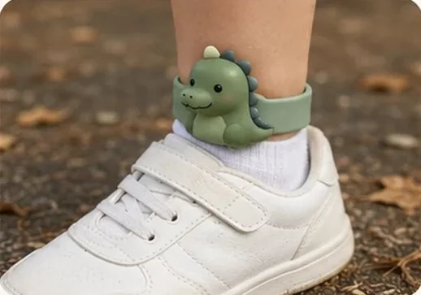
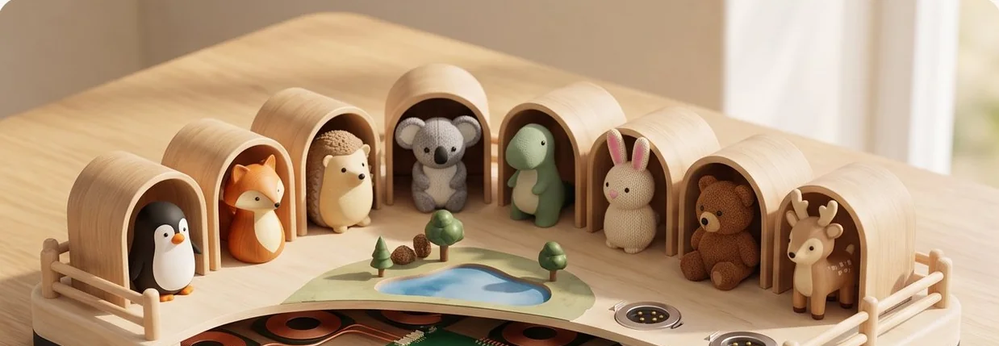
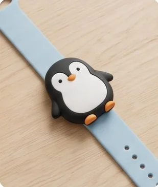
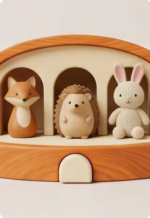
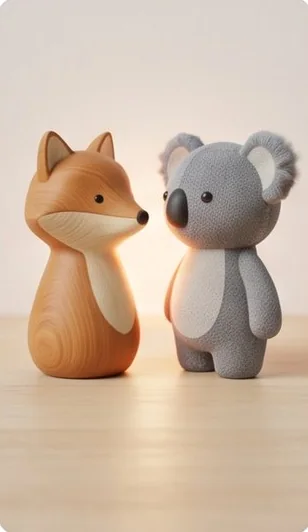

68% детей с аутизмом хотя бы раз проявляли агрессию к тем, кто о них заботится.
56% проявляют сейчас. К другим людям: 49%. 1 380 детей от 4 до 17 лет.
Emotional Zoo
У детей с аутизмом опубликованные работы находят сигнал в теле за минуты до эпизода. Emozu проверяет, может ли мягкий браслет с маленьким другом предупредить родителя вовремя, дома.
Стадия исследования. Не медицинское изделие. Не продаётся.

Проблема
Всё началось с одной близкой нам семьи. Потом мы прочитали, что пишут другие родители, и увидели ту же картину. Ребёнок часто не может сказать, что не так. Родитель ищет причину уже после, а следующий срыв снова приходит без предупреждения.
«Как другие родители чувствуют, что срыв приближается?»
«Ребёнок просыпается уже на грани, и я не вижу почему».
«Ищу носимое устройство, которое помогло бы избежать срывов».
Доля постов по каждой теме. Один пост может касаться нескольких.
Наша разметка 409 открытых постов: 370 из r/Autism_Parenting, 39 историй на русском. Большинство за 2025 и 2026 годы. Это не клиническая выборка. Три фразы выше пересказаны, это не цитаты.
В опубликованных данных
В каждой карточке ссылка на источник. Все ссылки собраны в конце страницы.
56% проявляют сейчас. К другим людям: 49%. 1 380 детей от 4 до 17 лет.
Сводная оценка: 37 работ, 14 379 человек.
Среди пропадавших 65% чуть не попали под машину, 24% чуть не утонули. 1 218 детей.
80 матерей детей с аутизмом, Россия.
Они ждут его с тревогой, чувствуют беспомощность и осуждение. Шесть глубоких интервью с родителями.
Сеть мониторинга CDC, данные 2022 года, 16 площадок в США.
Наша идея
Многие дети снимают медицинский датчик. Друг это другое. Друг сидит на браслете, браслет читает тело, а родитель получает тихое сообщение на телефон. На ребёнке нет экрана, в комнате нет сигнала тревоги.

Пульс и вариабельность Проводимость кожи, ЭДА Температура кожи Движение, 3 оси Заряд на 5 дней Без экрана Рендер · целевые параметрыМодуль с датчиками вынимается. Друг защёлкивается сверху. Один модуль подходит ко всем трём браслетам. В опросе 2025 года 67,5% из 40 родителей невербальных детей поддержали носимый детектор стресса (Weber et al.).




РендерЗоопарк это база дома. Там друг ночует, заряжается и синхронизируется. Память живёт в зверьке, а не в облаке. Предсказание считается на браслете, ключи лежат в защищённом элементе.
Приложение родителя
Сигнал тела высокий и растёт.
За минуты до, а не после.
Закономерности, которые не удержать в голове.
По реакции тела, а не наугад.
Концептуальные экраны с выдуманными данными. Работающего продукта пока нет.
Куда это идёт
Emozu. Сначала предупреждение.
Сегодня родитель узнаёт, когда уже видит срыв. Мы хотим убрать этот момент из детства.

Проверить предупреждение за минуты.

Понять, что успокаивает этого ребёнка.

Дети находят друг друга через них.
На чём это основано
Четыре работы 2019–2026 годов ловят эпизод по носимому датчику. Три из них предсказывают его за 1–10 минут. Модели ищут вот что: пульс растёт, вариабельность падает, всплески проводимости кожи учащаются.
Минуты до эпизода. Кривые иллюстративные. Окно из работ Imbiriba 2023 (3 мин) и Kartha 2026, препринт (10 мин).
AUROC показывает, насколько хорошо модель отличает «скоро эпизод» от «всё спокойно». 0,5 это монетка, 1,0 это идеал. Модели, выборки и горизонты разные, сравнивать нужно осторожно. «Эпизод» в этих работах это агрессия или другое сложное поведение, а это не всегда то, что родитель называет срывом.
20 детей и подростков, 6–17 лет · психиатрический стационар · за 1 минуту
Общая модель 0,71Личная модель 0,84
Первая работа такого рода и единственная, где личная модель явно выиграла. Выборка маленькая, поэтому результат цитируют часто, но опираться только на него нельзя.
Кратко простым языком: Northeastern University.
70 детей и подростков, 5–19 лет · 4 психиатрические больницы · за 3 минуты
Основной результат 0,80Лучший случай 0,87
9 мальчиков и юношей, 10–21 год · спецкласс · за 10 минут
На 10 минут 0,78 ± 0,10
11 мальчиков, 10–20 лет · The Center for Discovery · обнаружение, не заранее
Акселерометр 0,71
Эта работа обнаруживает эпизод в момент, когда он идёт, а не предупреждает заранее. Неудобный результат, который стоит проговорить: лучшим каналом здесь оказалось движение, а не проводимость кожи. Личные модели не выигрывали стабильно. Дешёвый акселерометр нельзя списывать со счёта.
Эта группа, вероятно, пересекается с Kartha 2026, поэтому мы не прибавляем этих 11 детей к общему числу.
В 2019 лучше, в 2023 хуже. Пилот проверяет это прямо: общая модель плюс две недели личной калибровки.
В одной работе один акселерометр обнаруживал эпизоды лучше, чем проводимость кожи (AUROC 0,71). Значит, даже простой модуль несёт сигнал.
На щиколотке, в классе. Датчик стоял там, потому что там дети его не снимают, а это важно не меньше модели.
Родитель, которого дёргают зря, перестаёт реагировать. Поэтому мы начинаем не с тревог, а с тишины: записываем, размечаем, смотрим назад. Фраза «вчера в 16:40 всё началось за восемь минут до того, как вы заметили» не даёт ложных тревог вообще. Живые предупреждения появятся позже и только если цифры выдержат.
Где мерить
Потовых желёз больше на кистях и стопах. В лабораторном сравнении на 45 студентах запястье откликалось слабее всех остальных мест. Поэтому один модуль переставляется: запястье, плечо, щиколотка. Место выбирает пилот: по данным и по тому, что ребёнок реально не снимает.
Запястья и щиколотки в исходной таблице нет. Их значения это оценка по соседним участкам, а не замер.
Пробел
Все модели обучены в больнице, клинике или классе. Дома предупреждение нужнее всего, а размеченных домашних данных мы не нашли. Именно их Emozu хочет собрать первыми.
стационар
4 психиатрические больницы
спецкласс
размеченные эпизоды
Почему сейчас
На нём Kartha и Bahrami Rad
Первая модель, 20 детей
70 детей, 4 больницы
На нём Imbiriba
Лучший канал: движение
10 минут, препринт
Прибор для семьи и домашние данные
Источники: Q-Sensor · Empatica E4. Школьник из Украины в этом году сам собрал похожий браслет (Українська правда), то есть идея носится в воздухе.
Наше прочтение публичных описаний продуктов, ноябрь 2026. Awake Labs.
Носимый прибор для ребёнка, который продавали как потребительский, а он оказался медицинским: Owlet.
От письма FDA до разрешения De Novo. Сбор FDA за De Novo сейчас $191 020 или $47 755 для малого бизнеса (2027 ф. г.).
«Предсказывает срыв» может сделать продукт медицинским изделием. Поэтому сегодня мы так не заявляем и сначала поговорим с регулятором.
Метод
Цель: около 15 эпизодов на ребёнка, а дома это 6–8 недель. Родитель отмечает эпизод одним касанием. Каждая отметка «что помогло» это ещё одна метка.
«Что помогло» возвращается в данные. Так модель узнаёт этого ребёнка.
Финальный протокол утвердим с клиническим партнёром и этическим комитетом, с предрегистрацией. Разметка видео по образцу Imbiriba 2023, где согласие разметчиков κ 0,86–0,95.
На горизонтах 3, 5 и 10 минут:
В фазе B сравниваем частоту и длительность эпизодов в дни «вкл» и «выкл».
Бот для разметки собран и обкатывается.
Роадмап
Статья с клиническими психиатрами, на 30–50 людях, на прототипах собственного производства. Это план, а не результаты.
Pre-seed на пилот. Носка весь день, сырой сигнал, разметка. Около 15 эпизодов. Вопрос: можем ли мы предупредить заранее, дома?
Через родительское сообщество на 135 семей. Тот же протокол, больше детей.
Научный консультант превращает данные пилота в протокол. Этика, согласия, права на данные. FDA Pre-Sub до любых заявлений.
Своя малая партия браслетов, которые отдают сырой сигнал и которые дети не снимают. Исследовательских приборов на рынке больше нет.
С клиническими психиатрами, на 30–50 людях, по протоколу. Затем пакет для раунда.
Вопросы, на которые ещё нужно ответить: кто платит, medical device или wellness, каким должен быть порог предупреждения.
Напишите нам
Нам нужны люди, с которыми пилот станет наукой и продуктом. Инвесторы, врачи и психиатры, инженеры по железу, исследовательские группы, семьи. Напишите строчку, киньте ссылку или приложите файл.
Юрий, основатель, читает каждое сообщение.
Источники